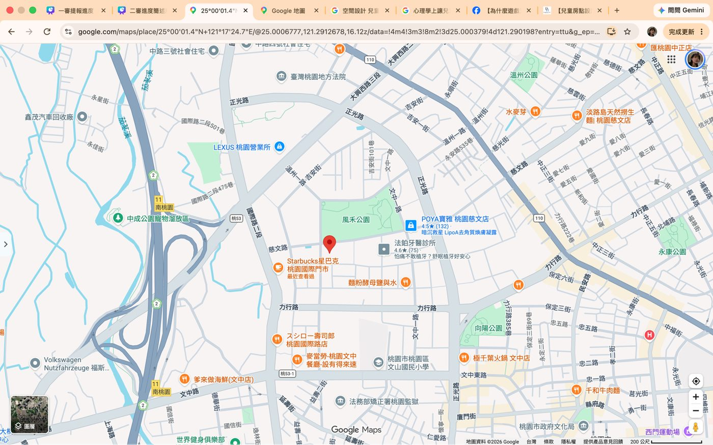
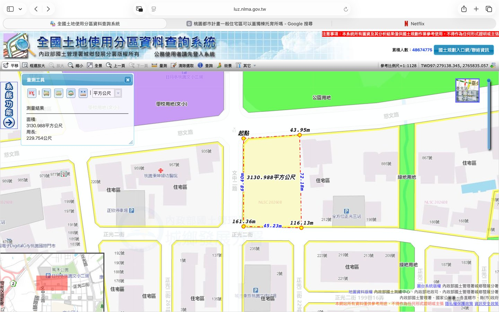
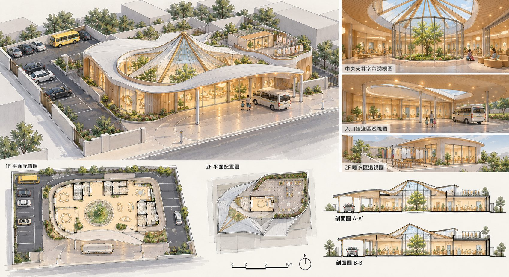

SPACE
樂園地圖
一棟獨立新建的夜間托育建築，位於桃園中路重劃區的住宅區，緊鄰婦幼醫院。
地點
地址
桃園市桃園區 慈文路住宅區空地 [門牌待定]
街廓
文中二路・慈文路・正光二街
氣候
副熱帶季風氣候・年均溫約 23°C
5–9 月多雨，接送區需全面遮雨

基地地圖

使用分區
住宅區
都市計畫
中路重劃區
基地面積
3,130.988 m²
約 947.1 坪
周長
229.754 m
建蔽率
50%
可建面積
約 1,565.49 m²
交通動線
主入口朝南
面向正光二街，避開車流較多的慈文路，深夜接送更安全安靜。
遮雨落客車道
車輛直接駛入弧形雨遮下的半戶外接送區，下車即進門。
停車場
約 165 m²，可停 10 輛汽車與 1 輛娃娃車。
步行與大眾運輸
鄰近風禾公園步道與周邊公車站 [站名待補]。
室內介紹

1F孩子與家長
出入口・報到區・交接緩衝・過渡活動區（120 m²）・情緒沉澱角・讀書作業角・半戶外天井・備餐及用餐空間・情緒緩和走廊・睡前伸展區・主題睡房 ×4・兒童洗漱區・值班室・照護員休息室・次要逃生出口
2F照護員後勤
洗衣區・頂層曬衣區・照護員專用樓梯
[平面圖待補]
動線安排
孩子的一夜動線
- 遮雨出入口
- 報到區
- 交接緩衝
- 過渡活動區
- 主題房陪玩
- 情緒緩和走廊
- 睡前伸展區
- 主題睡房
家長動線
- 停車場／落客車道
- 遮雨出入口
- 報到區
- 交接緩衝・道別
- 離開
家長不進入睡眠區，交接在入口段完成，維持睡眠區安靜。
照護員動線
- 值班室
- 照護員休息室
- 專用樓梯
- 2F 洗衣・曬衣
家事與托育分流；夜間依固定路線巡視四間主題房。
緊急疏散
睡眠區旁設次要逃生出口，夜間可快速疏散；每位托育員負責所屬主題房的孩子。
場域內的亮點
四大主題房
每間 4 位孩子・2 位托育員，從陪玩到入睡由同一組照護員陪伴。
ROOM 01
積木夢城
堆疊、組合，把心情蓋成一座城。
ROOM 02
月光搖搖馬
輕輕擺動，在月光裡慢下來。
ROOM 03
晚安小火車
一站一站跟今天說晚安。
ROOM 04
星光摩天輪
數著星星，轉一圈就睡著。
主題房介紹文字為示範。